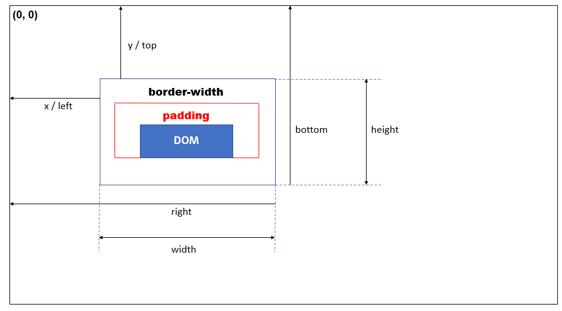

學習目標
- understand the definition of
getBoundingClinetRect() - using
getBoundingClientRectmethod to fulfill lazyload effect.
什麼是 getBoundingClientRect
這個方法會回傳一個物件，這個物件理會包含該指定元素的寬高與該元素相對於當前畫面 (viewport) 的位置。
Note:
來科普一下，上面講的當前畫面 (viewport) 到底指的是哪裡。
viewport 是指使用者可以看到的網頁範圍。
這意味著如果今天使用者使用 mobile devices 或者 tablets 來觀看網頁的話，這些裝置的 viewport 會比電腦還來的小。
getBoundingClientRect 的回傳值
getBoundingClientRect 會回傳一個物件，此物件所提供的資訊為該被指定元素的 left, top, right, bottom, x, y, width 和 height 。
那要特別注意的此方法所提供的 width 和 height 是有包含該元素的 padding 和 border-width 之後的結果。
同理，其回傳的 top, bottom, left, right, x, y 都是有加上 padding 和 border-width 之後的元素在當前 viewport 的距離和位置。
畫個簡單的示意圖來統整上面的特性

當使用者滾動時，取得目標元素的位置
因為 getBoundingClientRect 此方法是相對於當前的 viewport 的位置。我們可以透過這個方法的 top 和 left 值來知道，當 scroll 事件發生的時候，該指定元素相對於當前 viewport 左上角原點的位置。
使用 getBoundingClientRect 來實現 lazyload 的功能
因此，我們就可以透過 getBoundingClientRect 的 top 和 left 屬性，來判斷使用者是否滑到指定元素已經出現在 viewport 中，若出現在 viewport 內了，則執行 lazyload 的功能。
Conclusion
- understand the definition of
getBoundingCLientRect. - use
getBoundingClientRectto realize lazyload effect.